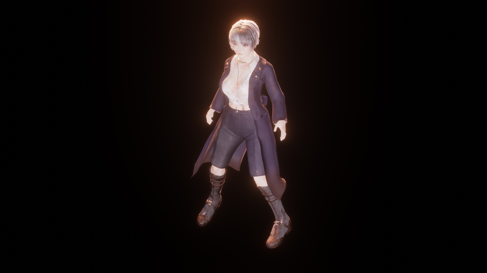
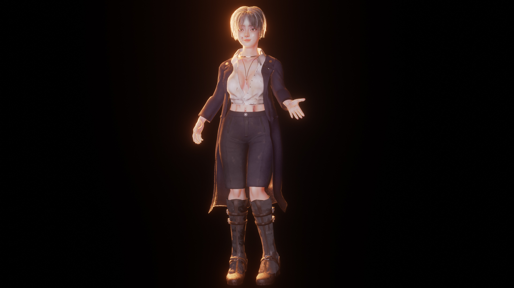
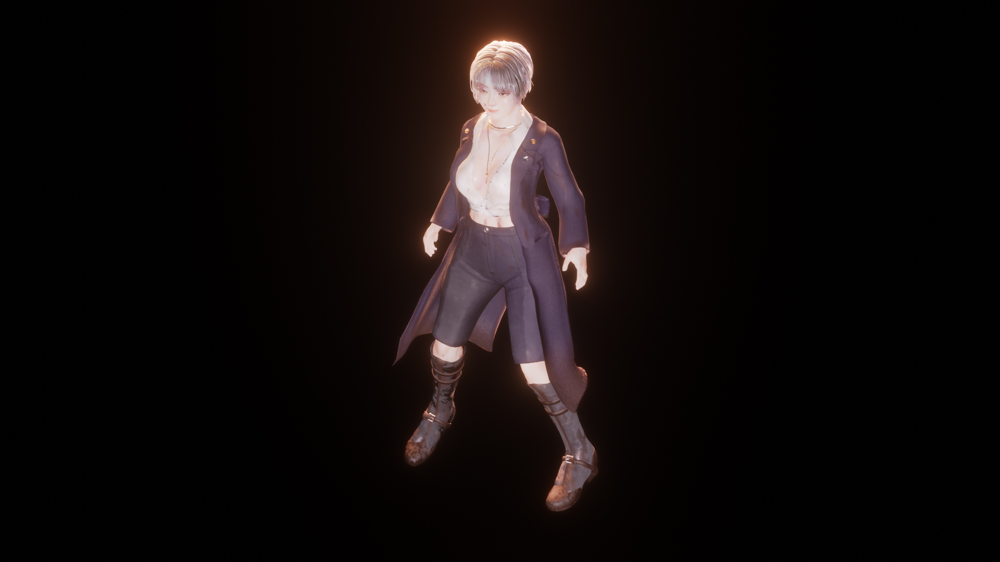
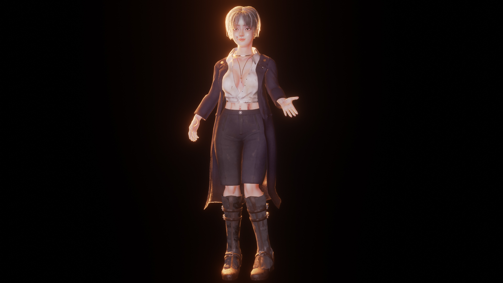
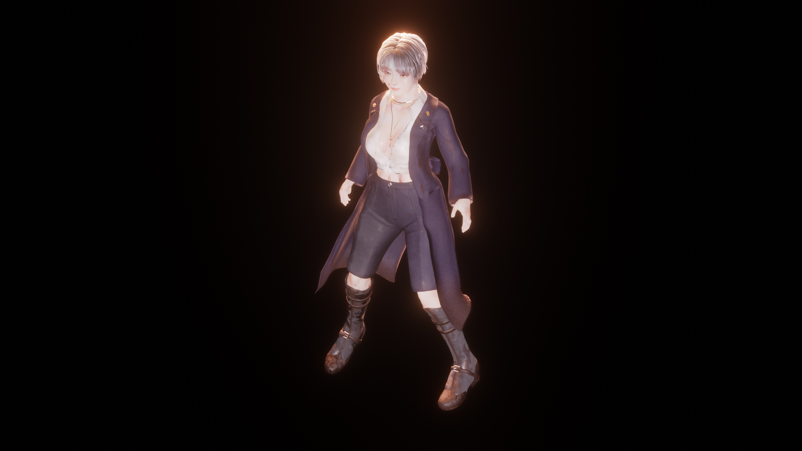
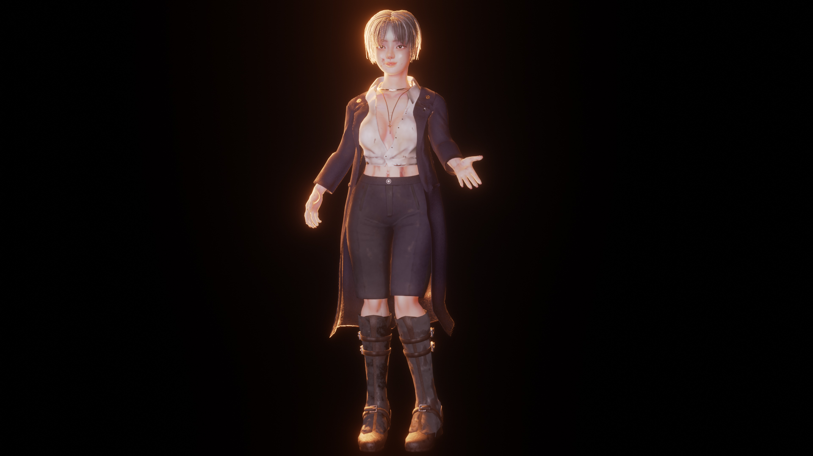
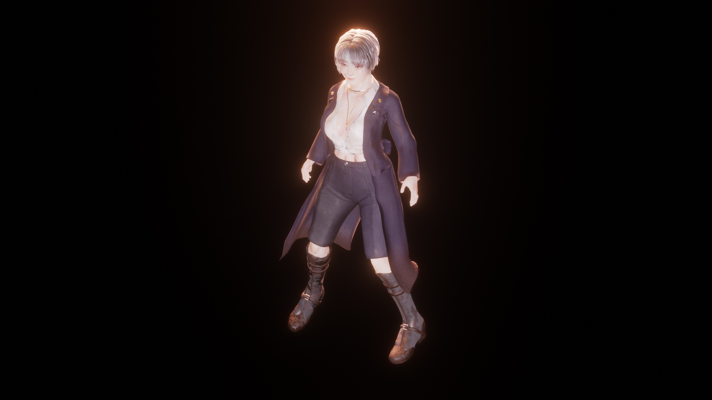
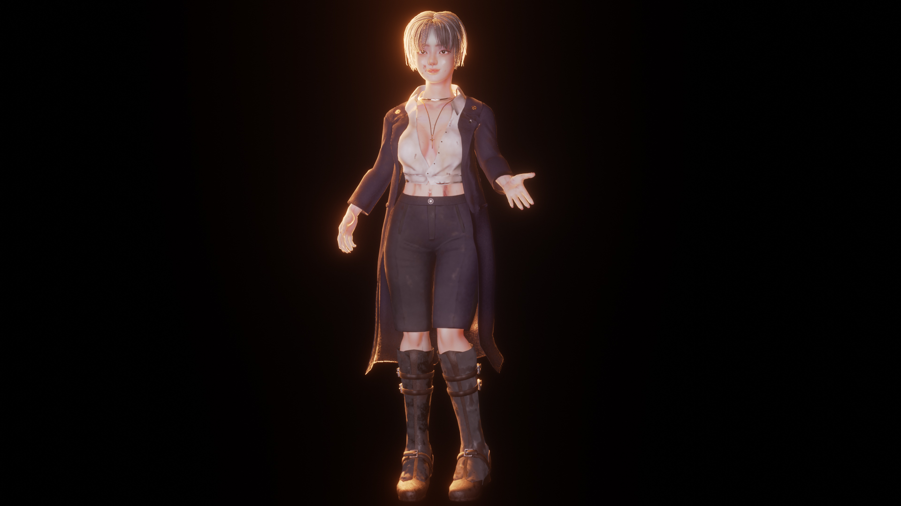

About
포스트 묵시록 시대에서 생존하는 강한 여자. 옛날 기술을 전수받아 현대 기술와 함께 활용하면서 발전해 나갑니다.
오염과 전쟁으로 인해 지구는 멸망하였다. 사람이 살수 없는 환경이 되어 사람들은 두려움과 희망을 잃었다. 그럼에도 불구하고 인류는 끝나지 않았다. 그때,
진화된 인간, 동물 그리고 물질들이 점점 생겨나면서 그들에게 새로운 시대가 시작되었다. 하지만 진화된 종들은 오염도가 높아 인간과 함께 살 수 가 없었다.
그렇게 그들은 흩어지면서 안전한 곳을 찾아 정착하였지만... 얼마 후 스카벤져가 나타나 그들을 탐색하면서 또 다시 악몽에 시달렸다. 한편 스카벤져로부터
지키는 집단이 있었는데 이 집단에서 태어난 한 여자의 이야기가 시작된다...
The process of making character
스컬핑
블랜더 스컬핑 툴을 활용하여 오브젝트를 몸, 팔, 다리 각 부위를 만든 뒤 합체했습니다.
리토플로지
Skin wrap 모디파이어와 함께 사용하여 폴리곤을 정리했습니다.
Multires 모디파이어
정리된 토플로지를 복사하여 옷을 만든 후 Multires 모디파이어의 기능으로 스컬핑 레이어를 만들었습니다. 그 후, Multires 모디파이어를 활용해서 단축된 노말 맵을 베이킹 합니다.
텍스처 및 색깔
블랜더의 머티리얼 셰이더 에디터와 텍스쳐 페인팅의 기능으로 텍스처를 만들었습니다.
텍스처 페인팅
텍스쳐 페인팅으로 피부의 베이스 컬러, 거칠기 맵, 그리고 서브 표면 컬러 맵을 만들어 프린시플드 BSDF에 연결했습니다.
노드
텍스처 노드, 벡터 노드, 색상 노드, 조합 셰이더 활용하여 피부, 옷, 장신구, 흙, 먼지 등등 텍스처를 표현했습니다.